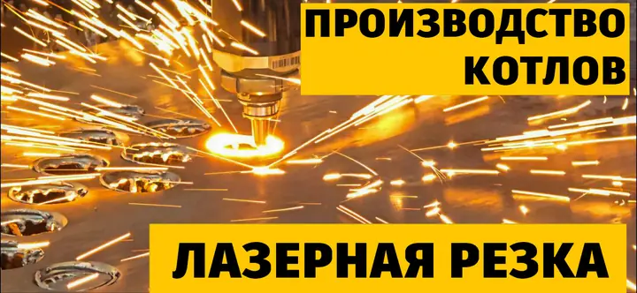
Котельное оборудование для тепличных комбинатов
Premium EТепло и CO₂ для роста.
Создаём в Энгельсе комплексы, в которых газ работает дважды: обогревает теплицу и становится источником CO₂ для растений.
Сделано на нашем заводе.Водогрейный котёл Premium E-7000
Посмотреть производство1–10 МВтмощность котла в подборе
≥ 95%КПД котла
до 105%КПД с конденсором по НТС
Один комплекс.
Тепло для теплицы. CO₂ для растений.
Как газ становится теплом и питанием
Котёл нагревает воду. Конденсор возвращает тепло дымовых газов. После охлаждения и контроля состава поток поступает к растениям. Выберите узел, чтобы увидеть параметры.
горячие газы
охлаждённая смесь
обратная вода
Рассмотреть оборудование и теплицу


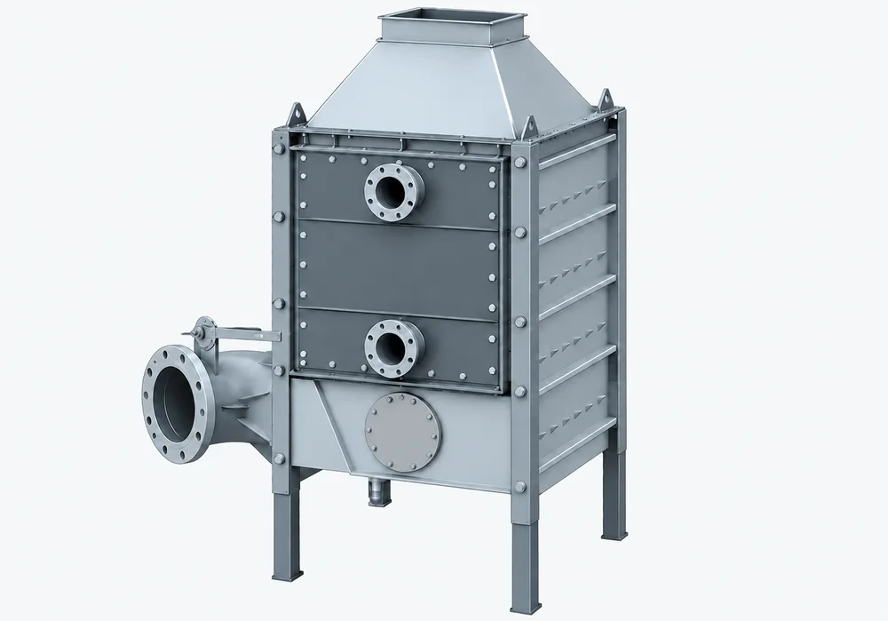
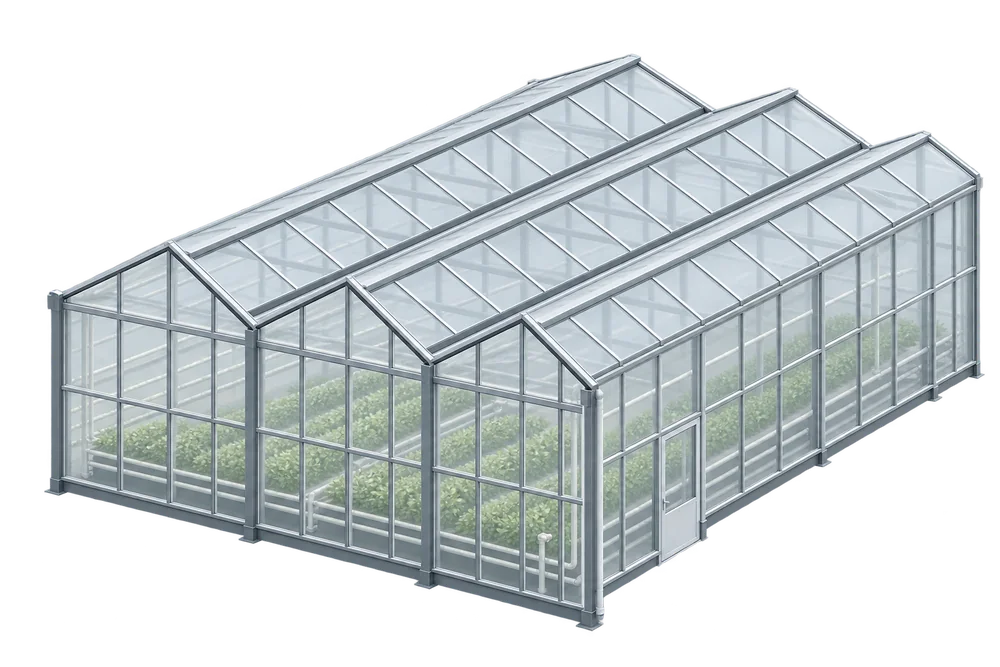
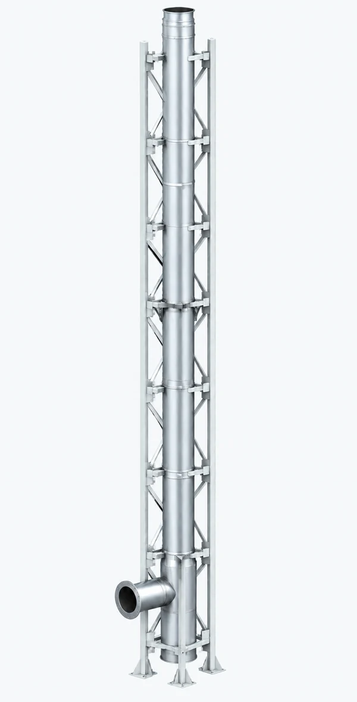
На схеме показан принцип работы. Масштаб и взаимное расположение оборудования условные. Горелку подбираем под мощность котла и режим работы комплекса.
Два температурных контура
Холодная вода 35–40 °C охлаждает дымовые газы в конденсоре. Насосная группа поддерживает обратную воду котла выше точки росы, защищая его от коррозии.
Тепло днём — отопление ночью
Пока котёл вырабатывает CO₂ для растений, бак-аккумулятор сохраняет тепло. Ночью верхняя горячая зона бака питает отопление теплицы.
Работа комплекса летом и зимойПроизводство полного цикла
За каждым котлом — наш завод в Энгельсе
Стали 09Г2С / Ст20 по ГОСТ 19281-2014 / ГОСТ 1050-2013. Контроль сварных соединений и гидроиспытания выполняются до отгрузки.
Ещё 8 фотографий котлов
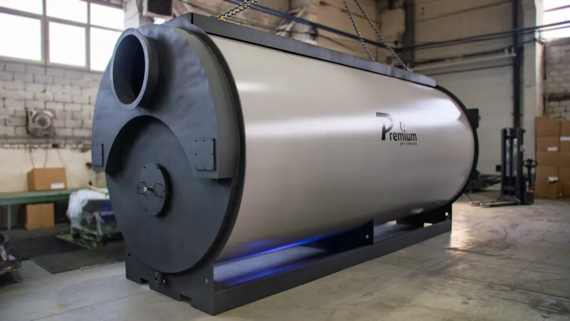
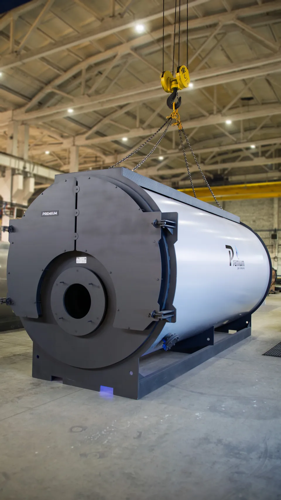
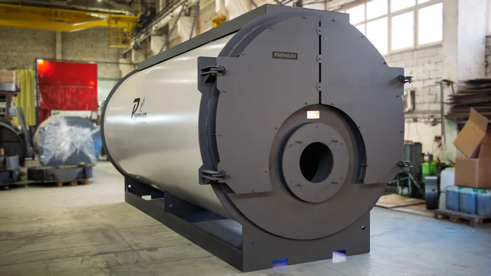
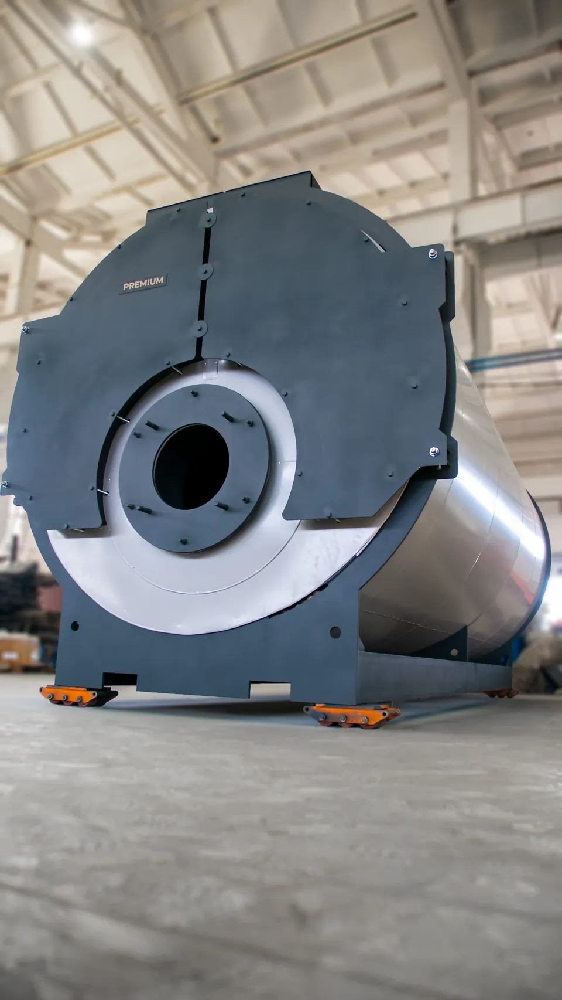
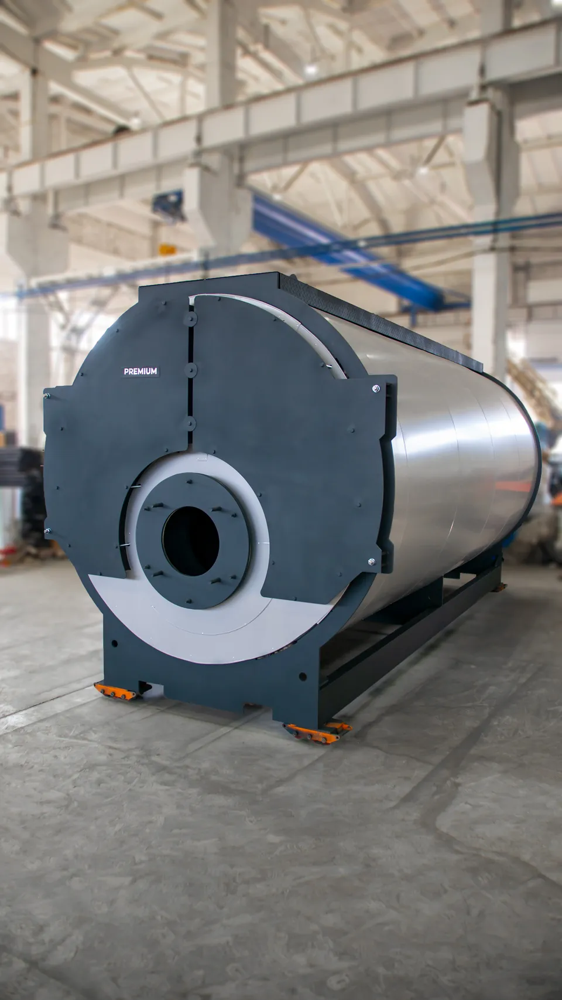
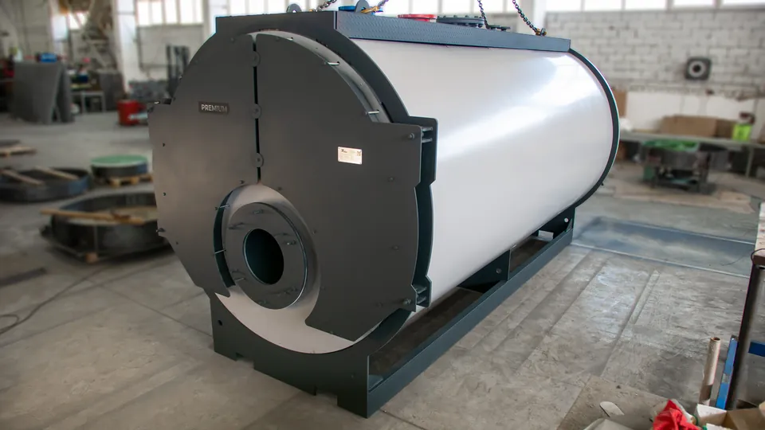
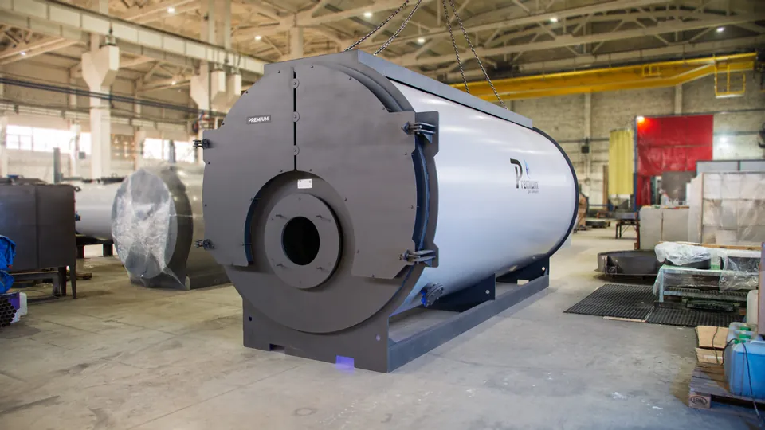
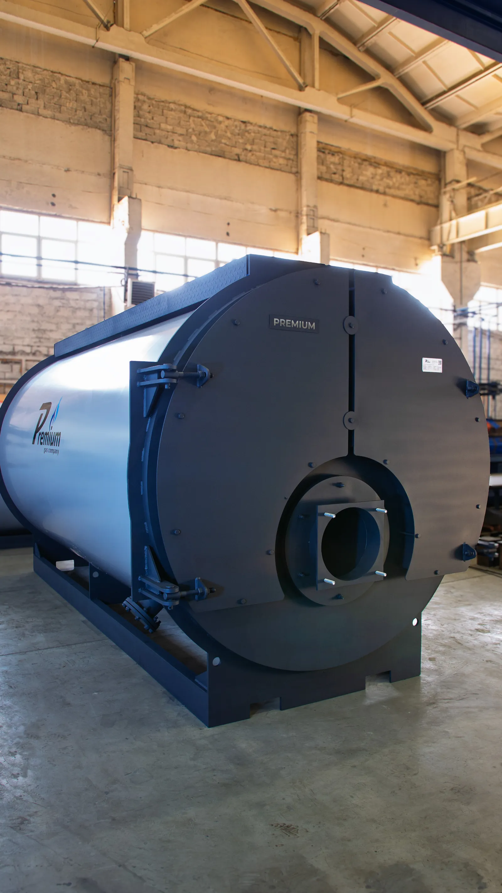
Вид со стороны горелки.
Сервисные двери и опоры котла.
Семь этапов производства
От листа металла до готового котла
Видео о работе нашего завода.
Выберите доступную площадку: YouTube или канал ВК Видео.
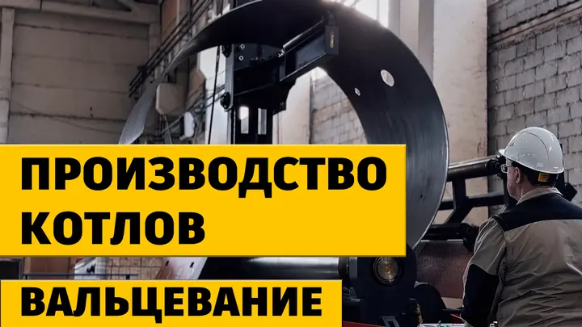
Вальцевание
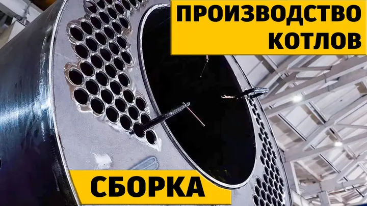
Сборка
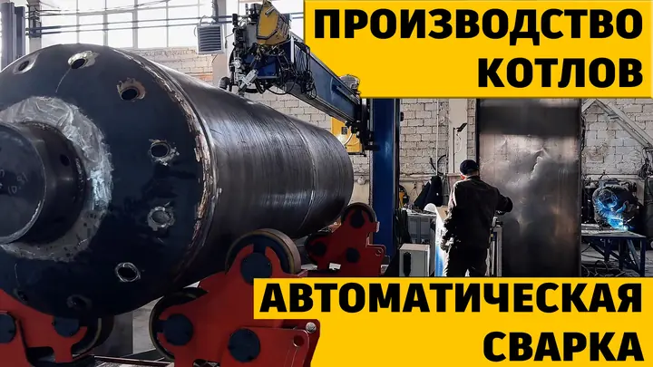
Автоматическая сварка
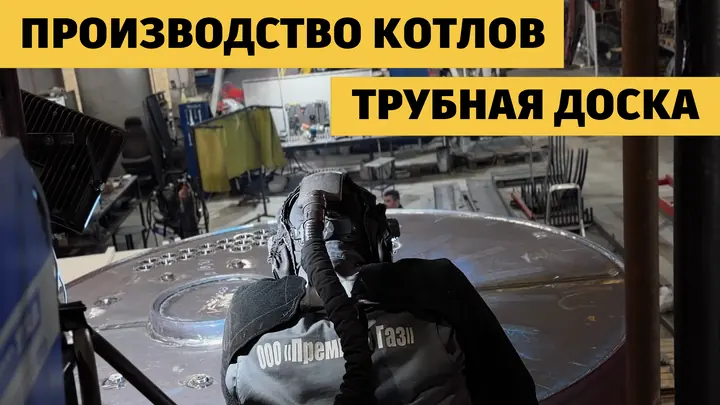
Трубная доска
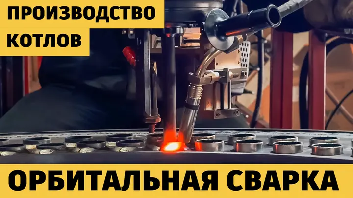
Орбитальная сварка
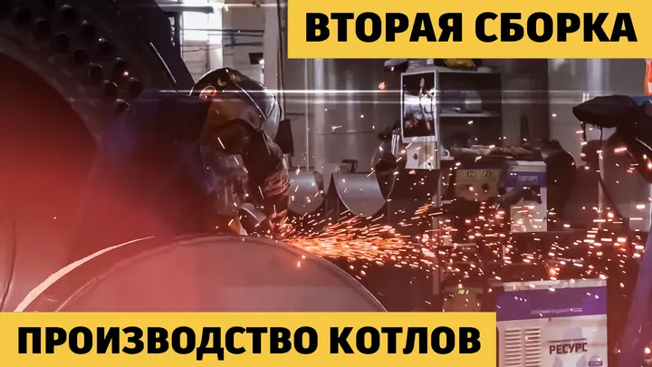
Вторая сборка
Больше о заводе и оборудовании — на основном сайте PREMIUM.
О производствеКарта поставокКаталог продукцииКомплекс под вашу задачу
Переключите уровень поставки. Точный состав утверждается после обследования объекта.
Завод «Премиум Газ»производство котлов и оборудования
Котёл Premium-E
удлинённая топка · КПД ≥95%
Горелка Low-NOx
модуляция 10–100% · FGR
Насосная группа
котловой и сетевой контуры
Локальная АСУ
ПЛК, щиты, основные датчики
Конденсор
120 → 50 °C · +10 п.п.
Камера смешения
≤40–45 °C перед рукавами
Газоанализ
O₂, CO, NOx, температура
Баки-аккумуляторы
день и ночь работают раздельно
Интеграция Priva
климатическая заявка на CO₂
Сухие градирни
летний сброс лишнего тепла
Резервирование ДГУ
насосы и защита при аварии сети
Труба с шибером
сброс некондиционного газа
Производим оборудование.
Помогаем выбрать монтажников.
Предложим несколько монтажных организаций из числа наших партнёров. Вы сравните стоимость, сроки и состав работ и выберете подходящего подрядчика.
Завод «Премиум Газ»
Производим котлы и оборудование. Помогаем с подбором и комплектацией, проводим заводские испытания.
Монтажные партнёры
Изготавливают блочно-модульные котельные и выполняют монтаж на объекте. Объём работ, цену и сроки вы согласуете с выбранной компанией.
Экономика комплекса
Использовать больше энергии того же газа
Конденсор возвращает тепло, которое обычно уходит в трубу. Подготовленные дымовые газы служат источником CO₂ для растений. В денежном расчёте ниже учитываем только энергетическую экономию.
процентных пунктов КПД
Охлаждение газов ниже точки росы возвращает скрытую теплоту в водяной контур.
как полезный побочный поток
Около 1,8 кг CO₂ образуется с каждого кубометра природного газа.
Подберите котёл для вашей теплицы
Получите модель, цену котла и два сценария энергетической окупаемости. Значения обновляются сразу.
- 01 1 МВт/га — предварительная оценка
- 02 точную мощность можно указать вручную
- 03 цены котлов от 13.07.2026
Онлайн-подбор пока недоступен. Инженер рассчитает комплекс по вашим данным: 8 (800) 700-51-33.
3 000 кВт расчётной нагрузки · 3 000 кВт установлено
цены от 13.07.2026; стоимость комплекса рассчитывается отдельно
относительно газовой котельной с КПД 92%
без стоимости горелки, конденсора, автоматики и монтажа
630 м³/ч доступного охлаждённого потока
для томатов · не включено в денежную окупаемость
Годовые затраты: 8 238 559 ₽ → 7 220 358 ₽
Охлаждённый поток покрывает расчётную потребность
Ориентировочный расчёт. Проектную нагрузку, резервирование, CAPEX комплекса и итоговый срок окупаемости определяет инженер завода.
Показать модельный ряд и цены
| Модель | Мощность | Цена |
|---|
Инженерные подробности
Разобраться в каждой детали.
От качества газа до обслуживания. Откройте раздел, который важен для вашего проекта.
Качество газа перед подачей в теплицуТемпература, CO, NOx и защита растений
Инженерная задача
Почему обычная котельная не подходит теплице
В теплоносителе важны градусы. В газе для растений важен каждый миллиграмм примесей.
Выше допустимого уровня
До 125 мг/м³ у стандартной горелки против предела 7 мг/м³ в теплице. Нужны Low-NOx, FGR и газоанализ.
Нельзя подавать напрямую
Горячий поток повреждает полимерные линии и корни. После конденсора смесь охлаждается и подмешивается до 40–45 °C.
120°50°40°
Риск для цветков и завязей
Следы этилена ускоряют старение и опадение. Качество горения и защитный сброс контролируются непрерывно.
анализПЛКшибер
Что означает КПД до 105%Конденсация и низшая теплота сгорания
Физика процесса
КПД выше 100% — физика, а не маркетинг
Счёт ведётся по низшей теплоте сгорания. Конденсация возвращает теплоту пара, которая в обычной схеме уходит в трубу.
Температура дымовых газов120 → 50 °C
пара с 1 м³ газа
При охлаждении ниже точки росы пар превращается в конденсат и отдаёт скрытую теплоту воде.
дополнительная очистка
Контакт с водой осаждает часть примесей. Газовый тракт конденсации выполняется из нержавеющей стали.
по низшей теплоте
Это не нарушение закона сохранения энергии, а другая база расчёта КПД.
Как комплекс работает летом и зимойCO₂ днём, запас тепла на ночь
Летний парадокс
CO₂ нужен днём.
Тепло — ночью.
Автоматика развязывает два графика с помощью бака-аккумулятора и сухих градирен.
ДЕНЬ · ЛЕТО
Котёл работает ради CO₂
Охлаждённый газ идёт растениям. Сопутствующее тепло заряжает верх бака до 90–95 °C; излишки отводят сухие градирни.
Premium-E
CO₂ → теплица
день
тепло → бак
90–95 °Cстратификация35–45 °C
сухая градирня
Как управляется CO₂-подкормкаУставки, свет, вентиляция и блокировки
Автоматика и агрономия
Сколько CO₂ нужно растениям прямо сейчас
Уставка меняется по фазе роста, свету и вентиляции. Фиксированное значение неэффективно.
Симулятор климатической заявки
Целевая концентрация
1 300 ppm
Высокий свет и закрытая теплица: повышенная уставка для плодоносящей культуры.
01500 ppm
КОНТУР 1
Климат теплицы
- NDIR-датчики ppm
- ФАР и досветка
- температура и влажность
- положение фрамуг
ПЛКзаявка
на CO₂
на CO₂
КОНТУР 2
Безопасность газа
- O₂ и качество горения
- CO и NOx
- температура смеси
- клапаны и шибер
↯
Защита урожая за секунды
CO > 20 или NOx > 7 мг/м³: путь в теплицу закрывается, поток уходит в дымовую трубу.
Конденсат и обслуживаниеНейтрализация и график сервисных работ
Экология и эксплуатация
Конденсат под контролем. Сервис — по понятному графику.
Кислый конденсат не сбрасывается бесконтрольно. Обслуживание привязано к состоянию оборудования и паспортам приборов.
Кислотостойкий сбор
Герметичный поддон и дренажная линия. Ориентир исходного конденсата: pH 3–5.
Сифон и контроль потока
Защита от подсоса газов, контроль расхода, уровня и отсутствия засоров.
Нейтрализация
Карбонатная загрузка — мрамор, известняк или доломит — повышает pH.
Контроль перед отводом
Сброс только после проверки и в соответствии с локальными требованиями к стокам.
Тренды и аварии
O₂, CO, NOx, температуры, расход газа, уровень конденсата, состояние смесителей.
Дренажи и заслонки
Сифоны, нейтрализатор, герметичность, свободный ход шибера и приводов.
Газоанализ и датчики
Функциональная проверка и калибровка по паспорту конкретного прибора.
Полное сервисное окно
Чистка конденсора и теплообменных поверхностей, ревизия горелки, арматуры и автоматики.
Вопросы инженера и директора
Коротко о рисках и эксплуатации
Параметры и режимы конкретного объекта уточняем при проектировании. Здесь — ответы на частые вопросы о системе.
Обсудить с инженером8 (800) 700-51-33Как дозируется CO₂ по фазе роста?+
После высадки используют более низкие уставки около 600–800 ppm. В активной вегетации — 800–1000 ppm. При высокой листовой поверхности и плодоношении — 1000–1200 ppm, иногда выше, если достаточно света и закрыта вентиляция.
Что происходит при открытии фрамуг?+
При открытии примерно на 10–15% автоматика снижает уставку, например до 600 ppm. При открытии более 30% подкормка отключается: удерживать повышенную концентрацию экономически бессмысленно.
Как контролируется безопасность газов?+
Климатический компьютер формирует заявку на CO₂. ПЛК котельной разрешает подачу только при допустимых O₂, CO, NOx и температуре. При нарушении поток переключается в дымовую трубу.
Как нейтрализуется кислотный конденсат?+
Он собирается в кислотостойкой системе, проходит карбонатную загрузку и контроль pH. Отвод разрешается только при соответствии локальным требованиям к стокам.
Как часто чистят конденсор и меняют горелку?+
Полное сервисное окно обычно планируют раз в год, но чистку назначают и по фактическим признакам. Горелку целиком не меняют по календарю: расходники и узлы заменяют по состоянию.
Какой регламент применяется?+
Паспорта котла, горелки, конденсора и газоанализа, карта ППР объекта, а также требования эксплуатации газопотребляющих установок и промышленной безопасности.
Следующий шаг
Рассчитаем комплекс под вашу теплицу
Инженер проверит тепловую нагрузку, схему CO₂, резервирование и даст точное коммерческое предложение.
Телефон8 (800) 700-51-33Почтаpremium-gas@mail.ru
Офис413100, г. Энгельс,
ул. Демократическая, 1
Производствог. Энгельс,
ул. Промышленная, 10Б
Форма пока недоступна. Позвоните 8 (800) 700-51-33 или напишите premium-gas@mail.ru.